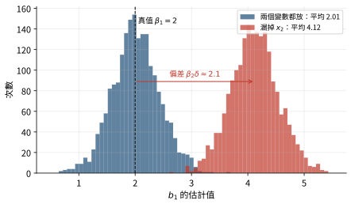
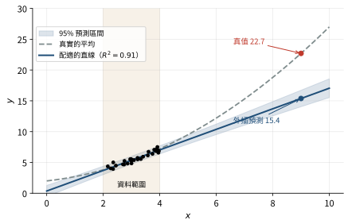
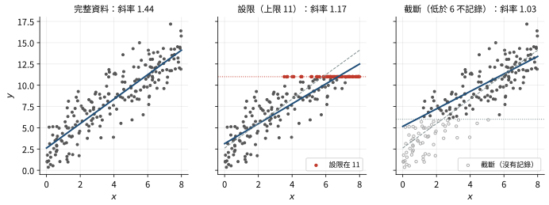

本章內容 10.1 統計顯著性 10.2 迴歸模型的用途 10.3 變數選擇：放太多與放太少 10.4 資料蒐集的問題 本章對應講義第 10 課，讀本是 Frees 6.1～6.3 節。講義這一課沒有章末習題，觀念題放在各節後面。
考點地圖：這一章在考試裡的位置
對應考綱 ：主題 2「線性模型」（占 40～50%）的學習成果 c（用業務情境解讀參數）與 e（選擇適當的模型）的觀念部分。
SOA 官方樣題裡的樣子 ：第 71 題（漏掉重要變數會怎樣，哪一句不正確：配適不足、預測區間變寬、\(s^2\) 被高估、總平方和不變都對；「係數仍然不偏」錯）。
會考的東西
題目長什麼樣
判斷的依據
係數的標準誤由什麼決定
怎樣讓係數更顯著
\(s_{b_j}=\dfrac{s\sqrt{\mathrm{VIF}_j}}{s_{x_j}\sqrt{n-1}}\)：\(s\) 小、VIF 小、\(x_j\) 散得開、\(n\) 大
顯著與重要、相關與因果
「顯著所以效果大」「有關所以是原因」對不對
都不對
過度配適
多放一個無關變數的後果
係數仍不偏；變異數變大、可能共線、少一個自由度
配適不足
漏掉一個重要變數的後果
係數有偏；\(s^2\) 被高估；預測區間變寬；總平方和不變
資料問題
取樣框架、取樣範圍、設限與截斷、內生變數、缺失資料
本章 10.4 節 的定義與例子
讀完這一章要會 ：
從係數變異數的公式說出四個讓係數更顯著的方法。
分辨統計顯著與實際重要、相關與因果。
推出漏掉變數造成的偏差 \(\beta_2\delta\)，說明什麼情況下不會有偏差。
分辨設限（censoring）與截斷（truncation），說出哪一個比較嚴重。
分辨外生變數與內生變數，列出處理缺失資料的三種做法。
10.1 統計顯著性 一、係數的標準誤由什麼決定
\(t\) 比值 \(t=b_j/s_{b_j}\) 越大，係數越顯著（第 3 章 ）。分子是估出來的效果，能控制的是分母。第 5 章 5.3 節 推過：
\[s_{b_j}=\frac{s\,\sqrt{\mathrm{VIF}_j}}{s_{x_j}\sqrt{n-1}},\]
其中 \(s\) 是殘差標準誤，\(\mathrm{VIF}_j=1/(1-R_j^2)\) 是第 \(j\) 個變數的變異數膨脹因子，\(s_{x_j}\) 是 \(x_j\) 的樣本標準差。
這條式子從哪裡來
簡單迴歸時 \(\mathrm{Var}(b_1)=\sigma^2/S_{xx}\)（第 3 章 ），而 \(S_{xx}=(n-1)s_x^2\)，所以 \(s_{b_1}=s/(s_x\sqrt{n-1})\)。
多元迴歸時，\(x_j\) 能用來估計 \(\beta_j\) 的資訊，只剩「其他變數解釋不了的那部分變動」，比例是 \(1-R_j^2\)（\(R_j^2\) 是 \(x_j\) 對其他解釋變數迴歸的 \(R^2\)）。有效的 \(S_{xx}\) 變成 \((n-1)s_{x_j}^2(1-R_j^2)\)，代回去就多了 \(\sqrt{1/(1-R_j^2)}=\sqrt{\mathrm{VIF}_j}\)。
所以要讓係數更顯著（標準誤更小），有四個方向：
因素
怎麼做
為什麼有用
\(s\) 小
更精確地量測 \(y\)；放進能解釋 \(y\) 的其他變數
雜訊小，效果容易看出來
\(\mathrm{VIF}_j\) 小
避免高度相關的解釋變數
變數之間不搶功勞（第 2 章 2.2 節 ）
\(s_{x_j}\) 大
讓解釋變數的值散得開
斜率由兩端的點決定，跨度越大估得越準
\(n\) 大
蒐集更多資料
標準誤和 \(\sqrt{n-1}\) 成反比
保險資料多半是觀察研究 （observational study），研究者沒辦法決定每一筆的 \(x\)；只有實驗研究 （designed experiment）能主動安排這些因素。
二、統計顯著不等於實際重要
統計顯著 （statistical significance）只表示「這個係數不太可能是 0」。樣本很大時，非常小的效果也會顯著。例如在 100 萬筆保單裡，某個因素讓平均理賠多 0.3 元，\(p\) 值可能極小，但對費率毫無影響。判斷實際重要性 （practical significance）要看係數的大小乘上變數實際的變動範圍，換算成金額或比例，再和業務的門檻比較。
反過來，樣本小時，一個實際上很重要的效果可能不顯著，只是因為資訊不夠。
三、相關不等於因果
迴歸係數描述的是「其他變數固定時，\(x_j\) 和 \(y\) 一起變動的關係」，不能直接說是 \(x_j\) 造成 \(y\) 的改變。要主張因果，通常需要：
一個說得通的因果機制 ；
時間順序正確（原因在前）；
排除其他解釋，特別是同時影響 \(x_j\) 與 \(y\) 的變數（10.3 節 漏掉變數的偏差就是一例）。
例如住在某些地區的保戶理賠較高，可能是因為那些地區醫療費用高，不是因為「住在那裡」本身。
考試怎麼考：顯著性
「增加樣本數、減少共線性、讓解釋變數的值更分散、更精確地量測反應變數，都能讓係數更顯著」對。
「係數統計顯著，所以這個變數對理賠有重大的財務影響」錯。
「迴歸發現 \(x\) 和 \(y\) 顯著相關，所以 \(x\) 是 \(y\) 的原因」錯。
觀念題（8 題，仿 SOA 樣題的觀念判斷與小計算，含跨章節）
觀念 觀念題 C10.1-1 仿 SOA 樣題・跨章：第 5 章・回到本節開頭 Determine which of the following actions would, other things equal, tend to make the estimated coefficient of \(x_j\) more statistically significant.
I. Increasing the sample size.
II. Choosing predictors that are less correlated with \(x_j\).
III. Collecting data in which the values of \(x_j\) are more spread out.
(A) I and II only
(B) I and III only
(C) II and III only
(D) I, II, and III
(E) The correct answer is not given by (A), (B), (C), or (D).
隱藏解答 中文題意
其他條件不變，下列哪些做法會讓 \(x_j\) 的係數更顯著？
I. 增加樣本數。
II. 選和 \(x_j\) 較不相關的其他解釋變數。
III. 讓 \(x_j\) 的值更分散。
解析
\(s_{b_j}=s\sqrt{\mathrm{VIF}_j}/(s_{x_j}\sqrt{n-1})\)：I 讓 \(\sqrt{n-1}\) 變大，II 讓 VIF 變小，III 讓 \(s_{x_j}\) 變大，三者都讓標準誤變小、\(t\) 比值變大。
觀念 觀念題 C10.1-2 仿 SOA 樣題・跨章：第 3,5 章・回到本節開頭 In a regression based on 101 observations, the residual standard error is \(s=6\), the sample standard deviation of \(x_j\) is 2, and \(\mathrm{VIF}_j=4\).
Calculate the standard error of \(b_j\).
(A) 0.15
(B) 0.30
(C) 0.60
(D) 1.20
(E) 3.00
隱藏解答 中文題意
101 筆觀察，\(s=6\)、\(x_j\) 的樣本標準差 2、\(\mathrm{VIF}_j=4\)，求 \(b_j\) 的標準誤。
解析
\(s_{b_j}=\dfrac{6\sqrt4}{2\sqrt{100}}=\dfrac{12}{20}=0.60\)。
(B) 0.30 是忘了乘 \(\sqrt{\mathrm{VIF}}\)；(D) 1.20 是把 VIF 直接相乘而不開根號（\(6\times4/20\)）。
易錯
是 \(\sqrt{\mathrm{VIF}}\) 與 \(\sqrt{n-1}\)，兩個都要開根號。
觀念 觀念題 C10.1-3 仿 SOA 樣題・跨章：第 3 章・回到本節開頭 Determine which of the following statements is/are true.
I. A statistically significant coefficient always indicates a practically important effect.
II. With a very large sample, a coefficient representing a negligible financial effect can be statistically significant.
III. A statistically significant relationship between \(x\) and \(y\) establishes that \(x\) causes \(y\).
(A) I only
(B) II only
(C) III only
(D) I and II only
(E) The correct answer is not given by (A), (B), (C), or (D).
隱藏解答 中文題意
下列哪些正確？
I. 統計顯著的係數一定代表實際重要的效果。
II. 樣本很大時，財務影響微不足道的係數也可能顯著。
III. \(x\) 與 \(y\) 顯著相關，就證明 \(x\) 是 \(y\) 的原因。
解析
I 錯、II 對：顯著只表示「不太可能是 0」，樣本大時很小的效果也顯著。III 錯：因果還需要機制、時間順序與排除其他解釋。
Determine which of the following is NOT generally required to support a claim that \(x\) has a causal effect on \(y\).
(A) A plausible causal mechanism.
(B) The cause occurs before the effect.
(C) Alternative explanations, such as confounding variables, are ruled out.
(D) The regression \(R^2\) exceeds 0.9.
(E) A statistical association between \(x\) and \(y\).
隱藏解答 中文題意
主張「\(x\) 造成 \(y\)」時，下列哪一項通常不是 必要條件？
解析
\(R^2\) 高低和因果無關：\(R^2\) 很高的關係可能完全是共同原因造成的，\(R^2\) 不高的關係也可能是真的因果。(A)、(B)、(C) 是 10.1 節 列出的條件，(E) 是起點。
A regression is fitted to 17 observations with residual standard error 4. Predictor \(x_j\) has sample standard deviation 2 and is uncorrelated with the other predictors.
Calculate the standard error of \(b_j\).
(A) 0.25
(B) 0.5
(C) 1.0
(D) 2.0
(E) 0.125
隱藏解答 中文題意
17 筆觀察，殘差標準誤 4；\(x_j\) 的樣本標準差 2，與其他變數無關。求 \(b_j\) 的標準誤。
解析
VIF \(=1\)：\(s_{b_j}=\frac{4}{2\sqrt{16}}=0.5\)。
Other things being equal (including the residual standard error and the spread of \(x_j\)), the number of observations is quadrupled.
Determine the effect on the standard error of \(b_j\).
(A) It is roughly halved
(B) It is quartered
(C) It is unchanged
(D) It doubles
(E) It is reduced by a factor of 16
隱藏解答 中文題意
其他條件（殘差標準誤、\(x_j\) 的分散）不變，觀察數變成 4 倍。\(b_j\) 的標準誤如何變化？
解析
\(s_{b_j}\propto1/\sqrt{n-1}\)，約變成一半。所以樣本很大時，再小的效果都會「顯著」。
In a regression on 50,000 policies, a coefficient is 0.02 (dollars of premium per dollar of income) with standard error 0.005.
Determine the most appropriate conclusion.
(A) The effect is both statistically and practically large
(B) The effect is not statistically significant
(C) The effect is statistically significant but may be too small to matter in practice
(D) The variable causes higher premiums
(E) The standard error is too large to draw conclusions
隱藏解答 中文題意
5 萬張保單的迴歸，某係數 0.02、標準誤 0.005。最恰當的結論是？
解析
\(t=4\)，統計顯著；但每多 1 元收入保費只多 0.02 元，實際影響可能很小。顯著不等於重要，也不等於因果（(D) 錯）。
Other things being equal, the VIF of \(x_j\) increases from 1 to 4 because a correlated predictor is added.
Determine the effect on the standard error of \(b_j\).
(A) It is halved
(B) It is multiplied by 4
(C) It is unchanged
(D) It doubles
(E) It is multiplied by 16
隱藏解答 中文題意
其他條件不變，因為加入相關的變數，\(x_j\) 的 VIF 從 1 變成 4。\(b_j\) 的標準誤如何變化？
解析
標準誤與 \(\sqrt{\mathrm{VIF}}\) 成正比：\(\sqrt4=2\) 倍。(B) 是變異數的倍數。
10.2 迴歸模型的用途 比較基準 （benchmarking）：用迴歸算出「考慮所有因素之後，應該是多少」，再看實際值有沒有偏離。例如用房屋特徵迴歸房價，判斷某一間房子的價格是否合理；或用保戶特徵迴歸理賠，找出異常高的理賠。這時殘差就是「無法用已知因素解釋的部分」。
預測 （第 9 章 ）：預測時應該附上預測區間。解釋變數離配適資料的中心越遠，預測區間越寬；離開資料的範圍之外，連模型本身是否成立都不確定（10.4 節 ）。
考試怎麼考：用途
「預測時應該提供預測區間，不只是點預測」對。
「輸入的解釋變數離配適資料越遠，預測區間越寬」對（第 9 章 的槓桿）。
觀念題（2 題，仿 SOA 樣題的觀念判斷與小計算，含跨章節）
觀念 觀念題 C10.2-1 仿 SOA 樣題・跨章：第 9 章・回到本節開頭 An insurer fits a regression of claim cost on policyholder characteristics and examines policies whose actual cost is far above the fitted value. Determine which use of regression this is.
(A) Benchmarking
(B) Variable selection
(C) Dimension reduction
(D) Clustering
(E) Imputation
隱藏解答 中文題意
保險公司用保戶特徵迴歸理賠成本，再檢查實際成本遠高於配適值的保單。這是迴歸的哪一種用途？
解析
用迴歸算出「考慮所有已知因素後應該是多少」，再看實際值偏離多少，就是比較基準。殘差大的保單是需要進一步調查的對象。
A regression of house prices on house characteristics is used to judge whether a particular house is priced unusually high, by looking at its residual.
Determine which use of regression this is.
(A) Prediction of a new observation
(B) Hypothesis testing of a coefficient
(C) Variable selection
(D) Causal inference
(E) Benchmarking
隱藏解答 中文題意
用房屋特徵迴歸房價，看某間房子的殘差判斷它是否定價偏高。這是迴歸的哪一種用途？
10.3 變數選擇：放太多與放太少 一、放太多：過度配適
在模型裡加入和反應無關的變數（多餘變數 ，extraneous variable）：
係數估計值仍然不偏 ：多餘變數的真實係數是 0，最小平方平均也會估出 0，其他係數的期望值不受影響。
但變異數變大 ：多估一個係數；若多餘變數和其他變數相關，還會帶來共線性，讓其他係數的標準誤膨脹。
少一個自由度 ：\(s^2=\mathrm{Error\ SS}/(n-k-1)\) 的分母變小。若這個變數幾乎沒有降低 Error SS，\(s\) 反而可能變大。模型較難解釋，在新資料上的表現也可能變差（第 1 章 的測試誤差）。
變數少而夠用的模型叫精簡模型 （parsimonious model）。
二、放太少：配適不足與漏掉變數的偏差
漏掉一個真正重要的變數，問題比較嚴重：剩下的係數會有偏 。
推導：漏掉變數的偏差
真實模型 \(y=\beta_0+\beta_1x_1+\beta_2x_2+\varepsilon\)，但只用 \(x_1\) 配適簡單迴歸，得到 \(b_1=\dfrac{\sum(x_{i1}-\bar x_1)y_i}{S_{x_1x_1}}\)。
把真實的 \(y_i\) 代進去，取期望值（\(\varepsilon\) 平均為 0）：
\[E(b_1)=\frac{\sum(x_{i1}-\bar x_1)(\beta_0+\beta_1x_{i1}+\beta_2x_{i2})}{S_{x_1x_1}}=\beta_1\frac{\sum(x_{i1}-\bar x_1)x_{i1}}{S_{x_1x_1}}+\beta_2\frac{\sum(x_{i1}-\bar x_1)x_{i2}}{S_{x_1x_1}} .\]
（\(\beta_0\) 那一項因為 \(\sum(x_{i1}-\bar x_1)=0\) 消失。）第一個分數等於 1，第二個分數是「\(x_2\) 對 \(x_1\) 做簡單迴歸的斜率」，記為 \(\delta\)：
\[E(b_1)=\beta_1+\beta_2\,\delta .\]
偏差 \(\beta_2\delta\) 只有在兩個條件同時成立時才會出現：漏掉的變數真的影響 \(y\)（\(\beta_2\ne0\)），而且 它和留下的變數相關（\(\delta\ne0\)）。白話說：\(x_1\) 把 \(x_2\) 的功勞也搶走了。

漏掉變數的偏差（模擬：\(y=1+2x_1+3x_2+\varepsilon\)，\(x_1\) 與 \(x_2\) 的相關係數 0.7、標準差都是 1，所以 \(\delta=0.7\)；\(n=50\)，重複 2,000 次）。藍色：兩個變數都放進模型時 \(b_1\) 的平均是 2.01，等於真值。紅色：只放 \(x_1\) 時 \(b_1\) 的平均是 4.12，接近理論值 \(2+3\times0.7=4.1\)，多出來的就是偏差 \(\beta_2\delta\)。 漏掉重要變數的其他後果（SOA 樣題第 71 題）：
配適不足 （underfitting）。\(s^2\) 被高估 ：\(x_2\) 的效果跑進殘差裡，殘差變大。預測區間變寬 ：因為 \(s\) 變大。總平方和不變 ：\(\mathrm{Total\ SS}=\sum(y_i-\bar y)^2\) 只和 \(y\) 有關，和模型放了哪些變數無關。
三、該放還是不放
Frees 的建議是：拿不準時，把變數留在模型裡，因為多放的代價（變異數）通常比少放的代價（偏差）小。但第 7、8 章的子集選擇、ridge、lasso，就是在有系統地處理這個取捨。
考試怎麼考：過度配適與配適不足
多放無關變數：係數不偏、變異數上升、可能共線、損失自由度。「係數會有偏」錯。
少放重要變數：係數有偏、\(s^2\) 高估、預測區間變寬、總平方和不變。「係數仍然不偏」錯（樣題第 71 題的答案）。
漏掉的變數若和留下的變數不相關，留下的斜率不偏，但 \(s^2\) 仍然被高估。
觀念題（7 題，仿 SOA 樣題的觀念判斷與小計算，含跨章節）
[Similar to SRM Sample Question #71] Determine which of the following statements regarding the effect of omitting an important explanatory variable that is correlated with the included variables is NOT true.
(A) It results in underfitting.
(B) It tends to increase the width of prediction intervals.
(C) The coefficient estimates of the included variables remain unbiased.
(D) The estimate of the variance, \(s^2\), is inflated.
(E) The total sum of squares remains unchanged.
隱藏解答 中文題意
漏掉一個和已放入變數相關的重要解釋變數，下列哪一句不正確 ？
解析
(C) 錯：\(E(b_1)=\beta_1+\beta_2\delta\)，漏掉的變數和留下的變數相關（\(\delta\ne0\)）時，係數有偏。
(A) 對：模型太簡單。(D) 對：漏掉的效果跑進殘差。(B) 對：\(s\) 變大，區間變寬。(E) 對：總平方和只和 \(y\) 有關。
The true model is \(y=\beta_0+\beta_1x_1+\beta_2x_2+\varepsilon\) with \(\beta_1=2\) and \(\beta_2=3\). In the data, the least squares slope of \(x_2\) regressed on \(x_1\) is 0.5. An analyst regresses \(y\) on \(x_1\) only.
Calculate the expected value of the estimated slope.
(A) 1.5
(B) 2.0
(C) 2.5
(D) 3.5
(E) 5.0
隱藏解答 中文題意
真實模型 \(\beta_1=2\)、\(\beta_2=3\)，資料中 \(x_2\) 對 \(x_1\) 的迴歸斜率 0.5。只用 \(x_1\) 迴歸時，斜率的期望值是多少？
解析
\(E(b_1)=\beta_1+\beta_2\delta=2+3(0.5)=3.5\)。
(B) 2.0 是以為沒有偏差；(E) 5.0 是把 \(\beta_2\) 整個加上去（忘了乘 \(\delta\)）。
Determine which of the following statements about adding an extraneous variable (one whose true coefficient is zero) to a regression model is/are true.
I. The coefficient estimates of the other variables become biased.
II. One residual degree of freedom is lost.
III. If the extraneous variable is correlated with the other predictors, their standard errors may increase.
(A) I and II only
(B) I and III only
(C) II and III only
(D) I, II, and III
(E) The correct answer is not given by (A), (B), (C), or (D).
隱藏解答 中文題意
加入真實係數為 0 的多餘變數，下列哪些正確？
I. 其他係數變得有偏。
II. 殘差少一個自由度。
III. 多餘變數和其他變數相關時，其他係數的標準誤可能變大。
解析
I 錯：多放無關變數，係數仍然不偏。II 對。III 對：共線讓 VIF 變大。
Determine which of the following statements is true.
(A) Omitting a relevant variable never biases the remaining coefficients.
(B) Omitting a relevant variable that is uncorrelated with the included predictors leaves their slope estimates unbiased.
(C) Including irrelevant variables reduces the variance of the coefficient estimates.
(D) A parsimonious model is one that includes every available variable.
(E) The total sum of squares decreases when a variable is omitted.
隱藏解答 解析
(B) 對：偏差 \(\beta_2\delta\)，漏掉的變數和留下的變數不相關時 \(\delta=0\)，斜率不偏（但 \(s^2\) 仍被高估）。
(A) 錯；(C) 錯，多放變數讓變異數變大；(D) 錯，精簡模型是變數少而夠用；(E) 錯，總平方和不隨模型改變。
The true model is \(y=\beta_0+2x_1-4x_2+\varepsilon\). In the data, the slope of \(x_2\) regressed on \(x_1\) is \(-0.5\). Only \(x_1\) is used in the fitted model.
Calculate the expected value of \(b_1\).
(A) 2
(B) 0
(C) 4
(D) −2
(E) 6
隱藏解答 中文題意
真實模型 \(y=\beta_0+2x_1-4x_2+\varepsilon\)，資料中 \(x_2\) 對 \(x_1\) 的斜率 \(-0.5\)。只用 \(x_1\) 配適，\(b_1\) 的期望值是多少？
解析
\(E(b_1)=\beta_1+\beta_2\delta=2+(-4)(-0.5)=4\)。(B) 是符號弄錯：\(2+(-4)(0.5)\)。
An important predictor \(x_2\) is omitted, but it is uncorrelated with the included predictor \(x_1\).
Determine which statement is true.
(A) \(b_1\) is biased
(B) \(b_1\) is unbiased, but \(s^2\) overestimates \(\sigma^2\)
(C) \(b_1\) is unbiased and \(s^2\) is unbiased
(D) The total sum of squares decreases
(E) The fitted values are unbiased for every observation
隱藏解答 中文題意
漏掉重要變數 \(x_2\)，但它與留下的 \(x_1\) 不相關。哪一句正確？
解析
\(\delta=0\)，所以沒有偏差；但 \(x_2\) 的效果跑進殘差，\(s^2\) 仍被高估。總平方和只與 \(y\) 有關（(D) 錯）。
An extraneous predictor (true coefficient 0) is added to a correctly specified regression.
Determine which statement is true.
(A) The other coefficients become biased
(B) The error degrees of freedom increase
(C) The other coefficients remain unbiased, but their variances may increase
(D) The total sum of squares increases
(E) \(s^2\) must decrease
隱藏解答 中文題意
在正確的模型中加入一個多餘變數（真實係數 0），哪一句正確？
解析
多放：不偏但變異數可能變大（尤其與其他變數相關時）；誤差自由度少 1；\(s^2\) 可能變大或變小。
10.4 資料蒐集的問題 迴歸只能從手上的資料學。資料怎麼來的，決定了結果能推廣到哪裡。
一、取樣框架錯誤
取樣框架錯誤 （sampling frame error）：資料取自和想研究的對象不同的群體。經典例子：用壽險保戶的死亡率資料估計年金保戶的死亡率。會買年金的人預期自己活得久（年金給付到死亡為止），會買壽險的人可能健康較差（逆選擇），兩群人的死亡率不同，用前者估後者會系統性地偏掉。
二、取樣範圍有限
資料只涵蓋某個範圍時，在範圍外的預測（外插 ，extrapolation）不可靠。在小範圍內看起來是直線的關係，放大到大範圍可能是曲線，就像在小範圍內旅行會覺得地球是平的。

真實關係是二次曲線（灰色虛線），但資料只在 \(x\) 介於 2 到 4 之間取得（黑點）。在這個範圍內，直線配適得很好（\(R^2=0.91\)）。外插到 \(x=9\) 時，直線預測約 15.4，真實的平均是 22.7；95% 預測區間的上界只有 16.7，也沒有包住真值，因為預測區間假設模型在那裡仍然成立。 三、設限與截斷
反應變數的觀察值可能不完整，有兩種情形：
設限 （censoring）：知道觀察值落在某個範圍外，但不知道確切數字。例如保單有理賠上限 100 萬，損失 300 萬的理賠只記錄為 100 萬，只知道「至少 100 萬」。這筆資料還在 ，只是被壓在上限上。截斷 （truncation）：落在某個範圍外的觀察值根本沒有被記錄 。例如有自負額 5 萬，低於 5 萬的損失保戶不會申報，資料裡完全沒有這些人；每一筆觀察都是「在損失超過 5 萬的條件下」才出現的。
兩者都會讓最小平方的估計有偏。截斷通常比設限嚴重 ，因為設限至少知道「有一筆在那裡」，截斷則連有多少筆都不知道。嚴重的設限也會造成明顯的偏差。

設限與截斷讓斜率變平（模擬：\(y=2+1.5x+\varepsilon\)，200 筆）。左：完整資料，配適斜率 1.44。中：把 \(y>11\) 的 58 筆設限在 11（紅點），被壓低的多半是 \(x\) 大的觀察值，斜率降到 1.17。右：把 \(y<6\) 的 62 筆截斷（整筆不記錄，灰色空心點），留下的資料在 \(x\) 小的那端只剩 \(y\) 偏高的點，斜率降到 1.03。 四、漏掉變數與內生變數
有時變數必須拿掉，例如法律禁止用某些因素（性別、種族）訂費率。拿掉之後，和它相關的其他變數會吸收它的效果（10.3 節 的偏差）。
外生變數 （exogenous variable）：數值由模型以外決定的變數，例如保戶的年齡、車種。內生變數 （endogenous variable）：數值由模型裡其他變數決定的變數。最常見的是落後一期的反應變數：
\[y_t=\beta_0+\beta_1y_{t-1}+\varepsilon_t\]
裡的 \(y_{t-1}\) 就是內生變數。更複雜的例子 \(y_t=\beta_0+\beta_1x_t+\beta_2y_{t-1}+\beta_3x_{t-1}+\varepsilon_t\) 有一個外生變數 \(x_t\)，以及兩個落後一期的變數 \(y_{t-1}\)、\(x_{t-1}\)（講義把這兩個都算成內生）。時間數列模型（第 19～21 章）經常包含內生變數。漏掉重要的外生變數時，模型常會轉而依賴內生變數（例如上一期的 \(y\)）來彌補。
五、缺失資料
某些觀察值缺少部分解釋變數的值。若資料是隨機缺失 （missing at random），可以：
刪除有缺失的觀察值 ：隨機缺失時對迴歸影響不大，但損失樣本。刪除缺失集中的變數 ：若缺失大多集中在某一個變數，刪掉這個變數損失的資料可能比刪掉觀察值少。補值 （imputation）：用某種方法填入估計值。缺點是填入的資料變異比真實資料小，會讓標準誤看起來比實際小。
考試怎麼考：資料問題
用壽險資料估年金死亡率：取樣框架錯誤。
在資料範圍外預測：外插，模型可能不成立。
理賠上限：設限；自負額以下沒有申報：截斷。「截斷通常比設限更嚴重」對。
落後一期的反應變數：內生變數。
補值的缺點：補出來的值變異太小。
本章總整理
\(s_{b_j}=s\sqrt{\mathrm{VIF}_j}/(s_{x_j}\sqrt{n-1})\)：\(s\) 小、VIF 小、\(x_j\) 散得開、\(n\) 大，係數越顯著。
統計顯著 ≠ 實際重要；相關 ≠ 因果。
多放無關變數：不偏但變異數大、少一個自由度、可能共線。少放重要變數：\(E(b_1)=\beta_1+\beta_2\delta\) 有偏、\(s^2\) 高估、預測區間變寬、總平方和不變。
取樣框架錯誤、外插、設限（知道有、不知道多少）與截斷（根本沒記錄，較嚴重）、內生變數（由模型內其他變數決定，如 \(y_{t-1}\)）、缺失資料的三種處理。
觀念題（8 題，仿 SOA 樣題的觀念判斷與小計算，含跨章節）
An actuary uses mortality experience from life insurance policyholders to estimate mortality for an annuity block. Determine which data problem this illustrates.
(A) Censoring
(B) Truncation
(C) Sampling frame error
(D) Endogeneity
(E) Data missing at random
隱藏解答 中文題意
用壽險保戶的死亡率經驗估計年金保單的死亡率，屬於哪一種資料問題？
解析
資料取自和研究對象不同的群體。年金購買者預期自己長壽，壽險購買者可能健康較差，兩群人的死亡率不同。
Determine which of the following statements about censoring and truncation is/are true.
I. Claims above a policy limit that are recorded at the limit are censored.
II. Losses below a deductible that are never reported are truncated.
III. Truncation is generally a more serious source of bias than censoring.
(A) I and II only
(B) I and III only
(C) II and III only
(D) I, II, and III
(E) The correct answer is not given by (A), (B), (C), or (D).
隱藏解答 中文題意
關於設限與截斷，下列哪些正確？
I. 超過理賠上限、以上限記錄的理賠是設限。
II. 低於自負額、從未申報的損失是截斷。
III. 截斷通常比設限造成更嚴重的偏差。
解析
I、II 是兩者的定義（10.4 節 第三小段）。III 對：設限至少知道「有一筆、而且超過上限」；截斷連有幾筆都不知道。
觀念 觀念題 C10.4-3 仿 SOA 樣題・跨章：第 19,20 章・回到本節開頭 Consider the model
\[y_t=\beta_0+\beta_1x_t+\beta_2y_{t-1}+\varepsilon_t ,\]
where \(x_t\) is determined outside the model. Determine which of the following is an endogenous variable.
(A) \(x_t\)
(B) \(y_{t-1}\)
(C) \(\varepsilon_t\)
(D) \(\beta_0\)
(E) None of the above
隱藏解答 中文題意
\(y_t=\beta_0+\beta_1x_t+\beta_2y_{t-1}+\varepsilon_t\)，\(x_t\) 由模型外決定。下列哪一個是內生變數？
解析
\(y_{t-1}\) 是落後一期的反應變數，數值由模型本身決定，是內生變數。\(x_t\) 由模型外決定，是外生變數。\(\varepsilon_t\) 是誤差項，\(\beta_0\) 是參數，都不是變數。
Determine which of the following statements about handling missing data is NOT true.
(A) If data are missing at random, deleting observations with missing values should not greatly affect the regression.
(B) If most missing values are in one variable, deleting that variable may lose less data than deleting observations.
(C) Imputed values tend to have less variability than the true values.
(D) Imputation always eliminates any bias caused by the missing data.
(E) Deleting observations with missing values reduces the sample size.
隱藏解答 解析
(D) 錯：補值只是用某個演算法填入估計值，補出來的資料變異較小，可能讓標準誤低估；若缺失不是隨機的，補值也無法消除偏差。其他四句是 10.4 節 的內容。
觀念 觀念題 C10.4-5 仿 SOA 樣題・跨章：第 9 章・回到本節開頭 A linear model is fitted to data with \(x\) between 2 and 4 and fits very well (\(R^2=0.95\)). Determine which of the following statements about predicting at \(x=9\) is/are true.
I. The prediction interval at \(x=9\) is wider than at \(x=3\).
II. Because \(R^2\) is high, the prediction at \(x=9\) is reliable.
III. The relationship may not be linear outside the range of the data.
(A) III only
(B) I and II only
(C) II and III only
(D) I, II, and III
(E) The correct answer is not given by (A), (B), (C), or (D).
隱藏解答 中文題意
資料的 \(x\) 介於 2 到 4、直線配適很好（\(R^2=0.95\)），在 \(x=9\) 預測時，下列哪些正確？
I. \(x=9\) 的預測區間比 \(x=3\) 寬。
II. \(R^2\) 高，所以 \(x=9\) 的預測可靠。
III. 資料範圍外的關係可能不是直線。
解析
I 對：離 \(\bar x\) 越遠，預測區間越寬（第 9 章 ）。II 錯、III 對：\(R^2\) 只描述資料範圍內的配適；外插時真實關係可能彎曲（10.4 節 的外插圖：\(R^2=0.91\) 的直線在 \(x=9\) 的預測區間沒有包住真值）。
Claims are recorded at the policy limit of 100,000 whenever the actual loss exceeds that amount.
Determine the type of data problem.
(A) Censoring
(B) Truncation
(C) Sampling frame error
(D) Endogeneity
(E) Missing at random
隱藏解答 中文題意
實際損失超過保單上限 100,000 時，理賠以 100,000 記錄。這是哪一種資料問題？
解析
知道它超過上限、但不知道確切值：設限。若超過上限的損失根本不出現在資料中，才是截斷。
Only losses above a deductible of 500 are reported to the insurer; smaller losses never appear in the data.
Determine the type of data problem.
(A) Censoring
(B) Truncation
(C) Endogeneity
(D) Limited sampling region only for \(x\)
(E) Multicollinearity
隱藏解答 中文題意
只有超過自負額 500 的損失會通報，較小的損失完全不在資料中。這是哪一種資料問題？
A model is fitted only to data with \(x\) between 20 and 40, and the fitted line is used to predict at \(x=80\).
Determine the main concern.
(A) The prediction interval will be narrower than at \(x=30\)
(B) The coefficients are biased within the data range
(C) The response is censored
(D) The relationship may not be linear outside the observed range, so the prediction may be unreliable
(E) The sample size is too small
隱藏解答 中文題意
模型只用 \(x\) 介於 20～40 的資料配適，卻拿來預測 \(x=80\)。主要的疑慮是什麼？
解析
取樣範圍有限：資料外的關係未知；而且即使模型成立，預測區間在 \(x=80\) 也會比在 \(x=30\) 寬（(A) 方向相反）。
顯示全部解答